Testy
Scenariusze testów
Pierwszym etapem testów, było sprawdzenie poprawności zaimplementowanego algorytmu. Nasze testy rozpoczeliśmy od mniejszej ilości zespołów, a następnie sprawdzaliśmy poprawność działania. Celem takiego działania było sprawdzenie czy algorytm zachowuje się poprawnie dla prostszego problemu, który był dla nas łatwiejszy do analizy. W kolejnym kroku zajeliśmy się testowanie poszczególnych funkcji juz dla naszego problemu, każdą funkcję testowaliśmy po jej implementacji w sposób ręczny, to znaczy sprawdzaliśmy czy dana funkcja zachowuje się tak jak zaplanowaliśmy, dzięki temu szybko mogliśmy wyeliminować błędy oraz sprawdzić poprawność algorytmu. W ostatniej części zajeliśmy się napisaniem kilku unit testów w Pythonie, które jeszcze raz miały za zadanie sprawdzić czy dane funkcję zachowują się prawidłowo.
Metodyka badań i testy
W naszych badaniach nad algorytmem sprawdzimy jak poszczególne parametry wpływają na wynik końcowy.
Test 1
Autor: Klaudiusz Grobelski
Pierwszym z nich będzie rozmiar populacji początkowej, dla czterech różnych wielkości populacji początkowych sprawdzimy zachowanie się algorytmu. Dla wszystkich zastosujemy:
rozmiar pokolenia 30,
selekcję turniejową,
wielkość turnieju 10,
procent elity 5%,
rodzaj mutacji zmiana gospodarza,
procentowa ilość mutacji 10%,
stopień mutacji 10,
Otrzymane wyniki:
wielkość populacji początkowej 20
- Funkcja celu 128138,76
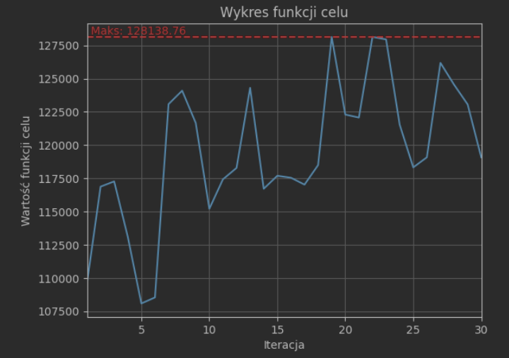
wielkość populacji początkowej 40
- Funkcja celu 183101,45
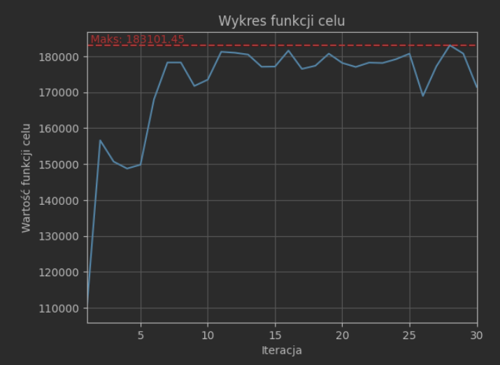
wielkość populacji początkowej 60
- Funkcja celu 169624,29
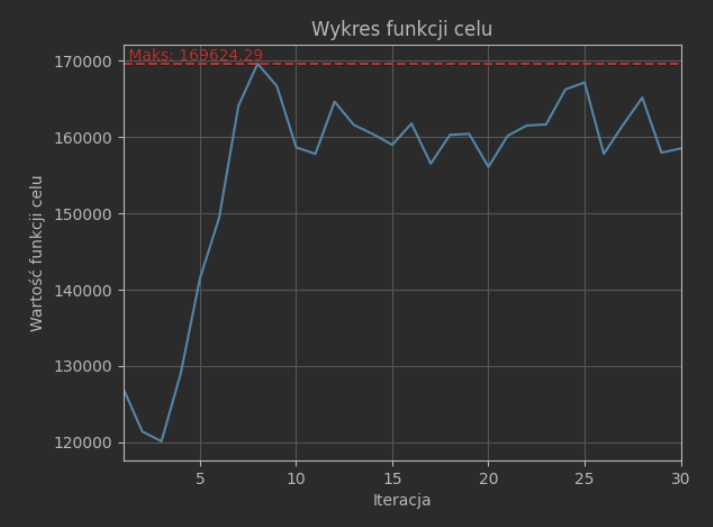
wielkość populacji początkowej 80
- Funkcja celu 227747,8
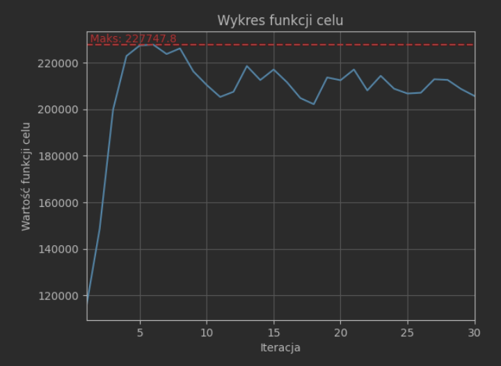
Wnioski: Wielkość populacji wpływa na wynik czym jest ona większa tym funkcja celu znajduję większy wynik
Test 2
Autor: Klaudiusz Grobelski
Drugim badanym parametrem będzie rozmiar pokolenia, również przetestujemy dla czterech różnych rozmiarów. Dla wszystkich zastosujemy:
rozmiar populacji poczatkowej 40
selekcję turniejową,
wielkość turnieju 10,
procent elity 5%,
rodzaj mutacji zmiana gospodarza,
procentowa ilość mutacji 10%,
stopień mutacji 10%,
Otrzymane wyniki:
wielkość pokolenia 10
- Funkcja celu 159480,86
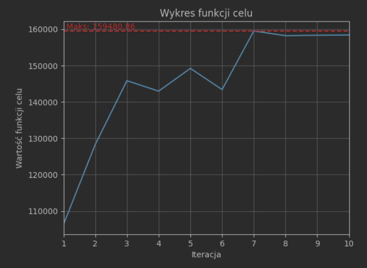
wielkość pokolenia 30
- Funkcja celu 152456,27
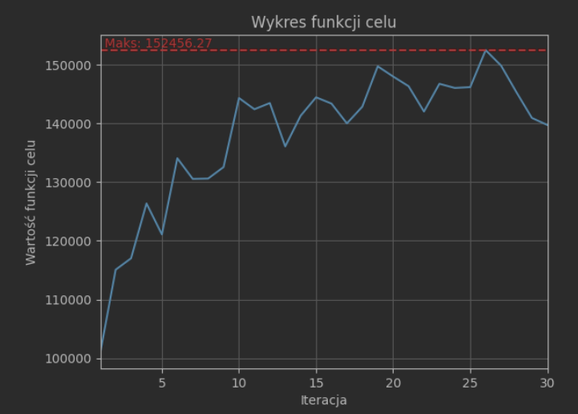
wielkość pokolenia 50
- Funkcja celu 166339,8
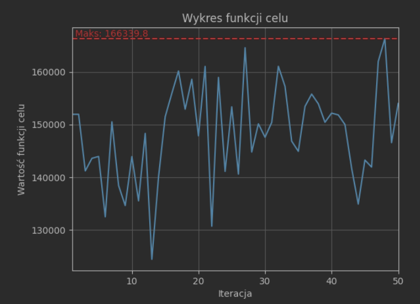
wielkość pokolenia 70
- Funkcja celu 152625,78
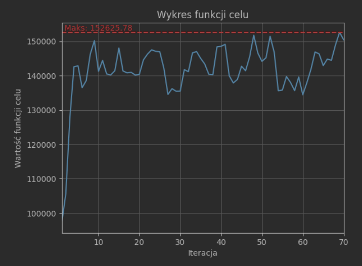
Wnioski: Rozmiar pokolenia ma znaczenie na działanie algorytmu, dzięki większej ilości algorytm może zbadać więcej możliwych rozwiązań.
Test 3
Autor: Klaudiusz Grobelski
Kolejnym parametrem będzie badanie rodzaju selekcji. Dla pozostałych parametrów zastosujemy poszczególne wartości:
rozmiar populacji poczatkowej 40
rozmiar pokolenia 30,
wielkość turnieju 10,
procent elity 5%,
rodzaj mutacji zmiana gospodarza,
procentowa ilość mutacji 10%,
stopień mutacji 10%,
Otrzymane wyniki:
selekcja turniejowa
- Funkcja celu 150496,82
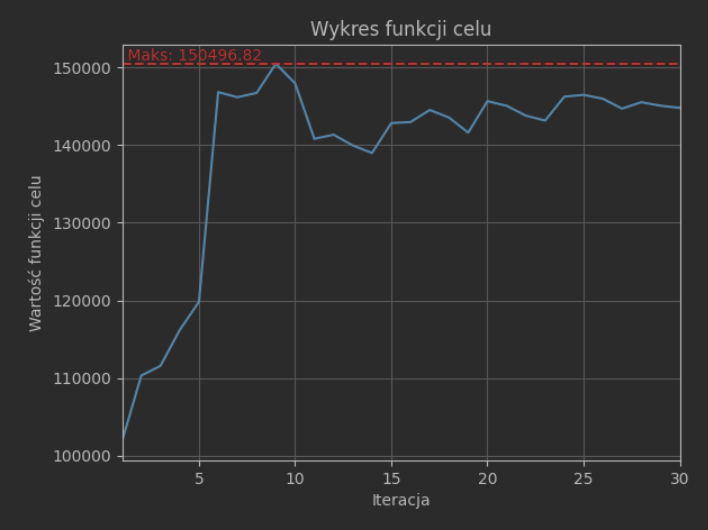
selekcja rankingowa
- Funkcja celu 162395,48
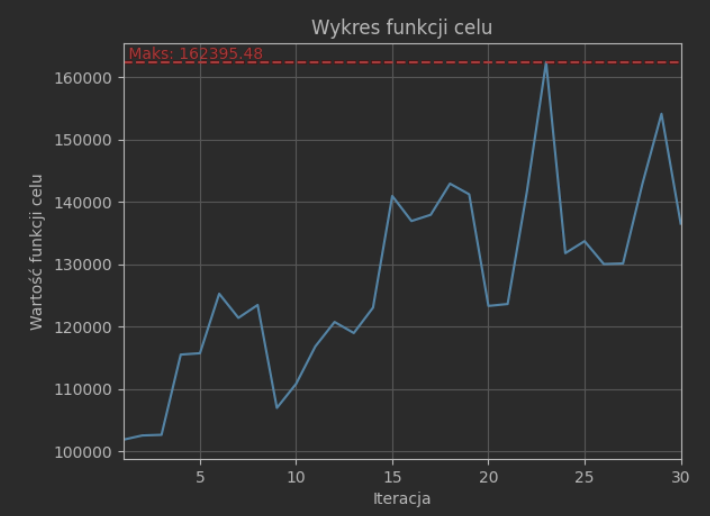
Wnioski: Selekcja truniejowa oraz rankingowa dobrze znajdują maksimum, żadna z metod nie jest znacząco lepsza od drugiej.
Test 4
Autor: Klaudiusz Grobelski
Następnie przejdziemy do testowania wielkości turnieju oraz rankingu. Zastosujemy poniższe parametry:
rozmiar populacji poczatkowej (40 mozna zmienic i najlepiej by bylo zeby zawsze byla taka sama wiec nie wiem czy przez gui to pojdzie i nie trzeba bedzie recznie tego zrobic),
rozmiar pokolenia 30, (można zmienic)
selekcję turniejową oraz rankingową
procent elity 5%,
rodzaj mutacji zmiana gospodarza,
procentowa ilość mutacji 10%,
stopień mutacji 10%,
Otrzymane wyniki:
selekcja turniejowa
rozmiar turnieju 5
- Funkcja celu 149361,12
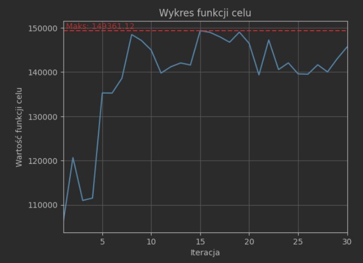
rozmiar turnieju 10
- Funkcja celu 174147,93
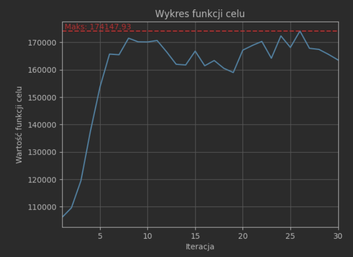
rozmiar turnieju 20
- Funkcja celu 163348,26
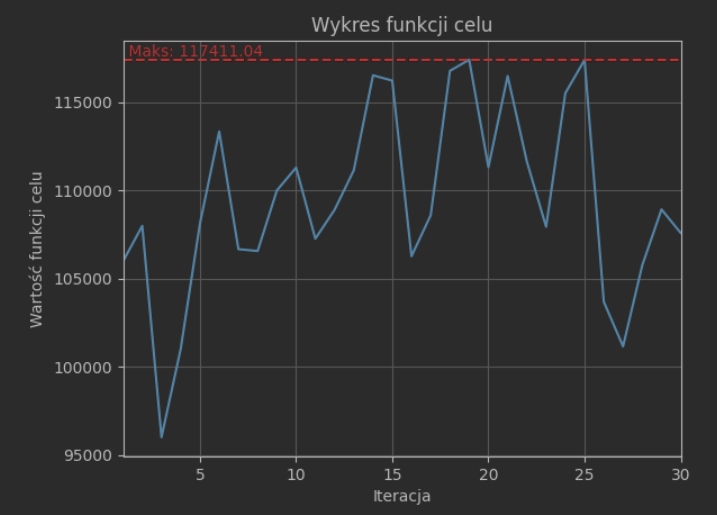
Wnioski: Wielkość turnieju ma znaczenie, dla działania algorytmu natomiast zbyt duży turniej powoduje, że zostają też krzyżowane juz znaczenie słabsze gatunki z wybranego pokolenia, co powoduje mniejsze poprawienie funkcji celu.
selekcja rankingowa
rozmiar rankingu 5
- Funkcja celu 153323,84
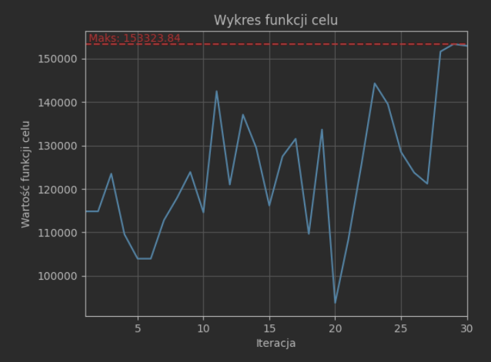
rozmiar rankingu 10
- Funkcja celu 150997,04
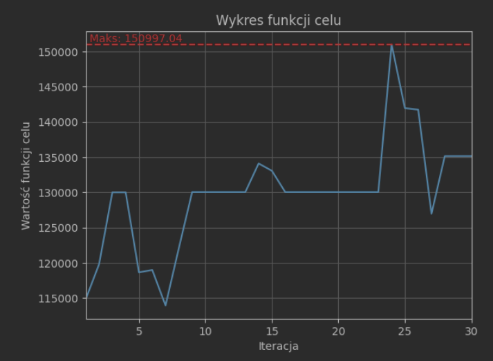
rozmiar rankingu 20
- Funkcja celu 171588,25
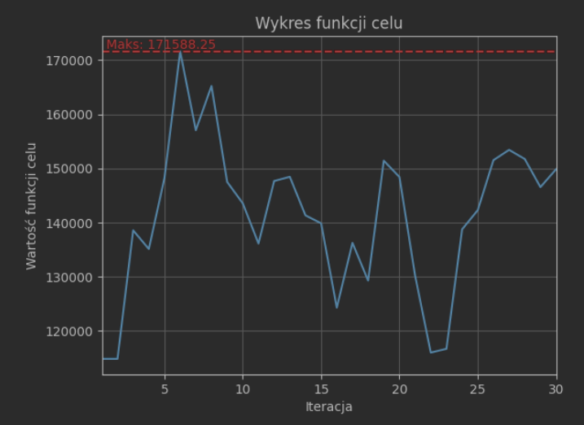
Wnioski: Dla selekcji rankingowej im większa wielkość rankingu tym lepszy wynik znajduje algorytm.
Test 5
Autor: Szymon Pająk
Kolejnym parametrem do testów jest procentowa ilość elity w pokoleniu, sprawdzimy dla trzech różnych wartości. Pozostałe parametry wyglądają następująco:
rozmiar populacji poczatkowej: 40,
rozmiar pokolenia: 30,
selekcja turniejowa
wielkość turnieju: 10,
rodzaj mutacji: zmiana gospodarza,
procentowa ilość mutacji: 10%,
stopień mutacji: 10%,
Otrzymane wykresy:
Elita: 10%
Funkcja celu: 147900.8

Elita: 20%
Funkcja celu: 161188.74

Elita: 50%
Funkcja celu: 216706.32

Wniosek: Większy odsetek elity pozytywnie wpływa na działanie algorytmu. Jest tak, ponieważ najlepsze osobniki mają szansę przetrwać więcej niż jedno pokolenie.
Test 6
Autor: Szymon Pająk
Następnie sprawdzimy jak wybór poszczególnych mutacji oraz ich połączeń daje najlepszy wynik końcowy. Pozostałe parametry wyglądają następująco:
rozmiar populacji poczatkowej: 40,
rozmiar pokolenia: 30,
selekcja turniejowa
wielkość turnieju: 10,
procent elity: 5%,
procentowa ilość mutacji: 10%,
stopień mutacji: 10%,
Otrzymane wykresy:
Zmiana godziny
Funkcja celu: 178017.71

Zmiana kolejki
Funkcja celu: 167399.82

Zmiana godziny 1. część sezonu
Funkcja celu: 141450.49

Zmiana godziny 2. część sezonu
Funkcja celu: 135657.01

Zmiana godziny oraz zmiana kolejki
Funkcja celu: 193558.93

Zmiana godziny 1. część sezonu oraz zmiana godziny 2. część sezonu
Funkcja celu: 153268.18

Zmiana godziny, zmiana kolejki, zmiana godziny 1. część sezonu oraz zmiana godziny 2. część sezonu
Funkcja celu: 175136.87

Wniosek: Przy stosowaniu tylko jednego rodzaju mutacji najlepszym rozwiązaniem będzie zamiana gospodarza meczu. Kolejnym dobrym, lecz nieco gorszym rozwiązaniem będzie zmiana kolejki. Najsłabiej wypadają zmiany godziny rozgrywania meczów wewnątrz danej kolejki. Zgodnie z oczekiwaniem zmiana w 1. części sezonu daje zbliżone efekty do zmiany w 2. części sezonu. Jeśli chodzi o stosowanie mutacji parami to po tym co zostało zaobserwowane w przypadku stosowania pojedynczych mutacji, zgodnie z tym czego się spodziewaliśmy kombinacja zmiany godziny i zmiany kolejki okazała się lepsza. Dodatkowo zaobserwowano, że zmienianie godzin w obu częściach sezonu sprawia, że funkcja celu z biegiem iteracji osiąga coraz mniejsze wartości. Zastosowanie wszystkich czterech rodzajów mutacji sprawiło, że funkcja celu osiągnęła wartość pomiędzy tą osiągniętą w przypadku zmiany gospodarza i kolejki oraz godzin w obu częściach sezonu. Optymalne zatem jest stosowanie dwóch rodzajów mutacji: zmiany gospodarza oraz zmiany kolejki.
Test 7
Autor: Szymon Pająk
Przedostatnim testowanym parametrem będzie, sprawdzenie jakie znaczenie ma procentowa ilość mutacji na znalezienie maksimum. Dla wszystkich parametrów zastosujemy:
rozmiar populacji poczatkowej: 40,
rozmiar pokolenia: 30,
selekcja turniejowa
wielkość turnieju: 10,
procent elity: 5%,
rodzaj mutacji: zmiana gospodarza,
stopień mutacji: 10%,
Otrzymane wykresy:
Procent mutacji: 5%
Funkcja celu: 184958.03

Procent mutacji: 10%
Funkcja celu: 197068.89

Procent mutacji: 25%
Funkcja celu: 170059.39

Procent mutacji: 50%
Funkcja celu: 138087.16

Wniosek: Zwiększenie procentu mutacji pozytywnie wpływa na działanie algorytmu jedynie do czasu, ponieważ w pewnym momencie zmiany w każdej iteracji są zbyt duże. Zbyt duża liczba mutowanych osobników sprawia, że “gubimy” dobre rozwiązania i je zmieniamy.
Test 8
Autor: Szymon Pająk
Ostatnim parametrem, który został poddany badaniom był stopień mutacji w algorytmie, to znaczy jak bardzo osobnik z pokolenia ma zostać zmutowany. Pozostałe parametry prezentują się następująco:
rozmiar populacji poczatkowej: 40,
rozmiar pokolenia: 30,
selekcja turniejowa
wielkość turnieju: 10,
procent elity: 5%,
rodzaj mutacji: zmiana gospodarza,
procentowa ilość mutacji: 10%,
Otrzymane wykresy:
Stopień mutacji: 5%
Funkcja celu: 155456.05

Stopień mutacji: 10%
Funkcja celu: 177505.44

Stopień mutacji: 25%
Funkcja celu: 140462.74

Wniosek: Zwiększenie stopnia mutacji pozytywnie wpłynęło na działanie algorytmu, jednakże tylko do pewnego stopnia. Zbyt duże mutowanie danego osobnika sprawia, że wynik pogarsza się.
W naszych testach zajeliśmy się również badaniem złożoności czasowej oraz pamięciowej w zależności od wielkości populacji.
W pierwszej części zajeliśmy się badaniem złożoności pamięciowej sprawdziliśmy jak zachowuję się dla pokolenia od rozmiaru 20 do 90. Podstawowe parametry ustawiliśmy następująco:
rozmiar pokolenia 30,
selekcję turniejową,
wielkość turnieju 10,
procent elity 5%,
rodzaj mutacji zmiana gospodarza,
procentowa ilość mutacji 10%,
stopień mutacji 10,
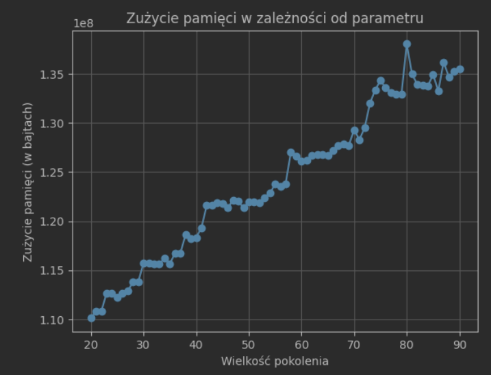
W drugiej części zajeliśmy się badanie czasu na wielkość pokolenia, przy takich samych pozostałych wartościach pozostałych parametrów:
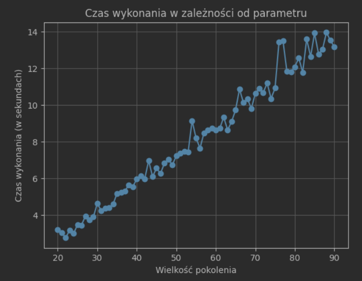
Wnioski: Zaobserwowaliśmy, że dla czas wykonania oraz zużycie pamięci jest zależne od wielkości pokolenia, im większe pokolenie tym większe zużycie pamięci oraz czasu.